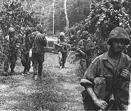
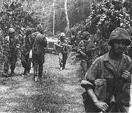

ANGOLA
Angola, oficialmente República de Angola, é um país da costa ocidental de África, cujo território principal é limitado a norte e a nordeste pela República Democrática do Congo, a leste pela Zâmbia, a sul pela Namíbia e a oeste pelo Oceano Atlântico. Inclui também o exclave de Cabinda, através do qual faz fronteira com a República do Congo, a norte. Para além dos vizinhos já mencionados, Angola é o país mais próximo da colónia britânica de Santa Helena.
Os portugueses estiveram presentes desde o século XV em alguns pontos do que é hoje o território de Angola, interagindo de diversas maneiras com os povos nativos, principalmente com os habitantes do litoral. A delimitação do território apenas aconteceu no início do século XX. O primeiro europeu a chegar a Angola foi o explorador português Diogo Cão. Angola foi uma colónia portuguesa que apenas abrangeu o actual território do país no século XIX e a "ocupação efectiva", como determinado pela Conferência de Berlim em 1884, aconteceu apenas na década de 1920.
A independência do domínio português foi alcançada em 1975, depois de uma guerra de independência. O Brasil foi o primeiro país a reconhecer a independência do país, ainda em 1975. Após a independência, Angola foi palco de uma longa e devastadora guerra civil, de 1975 a 2002, sobretudo entre o MPLA e a UNITA. Apesar do conflito interno, áreas como a Baixa de Cassanje mantiveram activos seus sistemas monárquicos regionais. No ano de 2000 foi assinado um acordo de paz com a Frente para a Libertação do Enclave de Cabinda, organização de guerrilha que luta pela secessão de Cabinda e que ainda se encontra activa. É da região de Cabinda que sai aproximadamente 65% do petróleo de Angola.
O país tem vastos recursos naturais, como grande reservas de minerais e de petróleo e, desde 1990, sua economia tem apresentado taxas de crescimento que estão entre as maiores do mundo, especialmente depois do fim da guerra civil. No entanto, os padrões de vida angolanos continuam baixos e cerca de 70% da população vive com menos de dois dólares por dia, enquanto as taxas de expectativa de vida e mortalidade infantil no país continuam entre as piores do mundo, além da presença proeminente da desigualdade económica, visto que a maioria da riqueza do país está concentrada numa parte desproporcionalmente pequena da população. Angola também é considerada um dos países menos desenvolvidos do planeta conforme a Organização das Nações Unidas (ONU) e um dos mais corruptos do mundo pela Transparência Internacional.
Etimologia
O nome Angola é uma derivação portuguesa do termo banto n’gola, título dos reis do Reino do Dongo existente na altura em que os portugueses se estabeleceram em Luanda, no século XVI. O termo tem raízes no termo ngolo que significa "força" em quimbundo e em quicongo, línguas dos povos ambundos e congos respectivamente. Quando os portugueses chegaram à região da província de Luanda, observaram que o monarca local, Angola Quiluanje era assim denominado, passando a chamar o Reino Angola-Dongo com este título.
História
Primeiros habitantes
Os habitantes originais de Angola foram caçadores-colectores coissã, dispersos e pouco numerosos. A expansão dos povos bantos, chegando do norte a partir do segundo milénio, forçou os coissã (quando não eram absorvidos) a recuar para o sul onde grupos residuais existem até hoje, em Angola (ver mapa étnico), na Namíbia e no Botsuana.
Os bantos eram agricultores e caçadores. A sua expansão, a partir da África Centro-Ocidental, se deu em grupos menores, que se relocalizaram de acordo com as circunstâncias político-económicas e ecológicas. Entre os séculos XIV e XVII, uma série de reinos foi estabelecida, sendo o principal o Reino do Congo que abrangeu o Noroeste da Angola de hoje e uma faixa adjacente da hoje República Democrática do Congo, da República do Congo e do Gabão; a sua capital situava-se em Mabanza Congo e o seu apogeu se deu durante os séculos XIII e XIV.
Outro reino importante foi o Reino do Dongo, constituído naquela altura a Sul/Sudeste do Reino do Congo. No Nordeste da Angola actual, mas com o seu centro no Sul da actual República Democrática do Congo, constituiu-se, sem contacto com os reinos atrás referidos, o Reino de Lunda.
Em 1482 chegou na foz do rio Congo uma frota portuguesa, comandada pelo navegador Diogo Cão que de imediato estabeleceu relações com o Reino do Congo. Este foi o primeiro contacto de europeus com habitantes do território hoje abrangido por Angola, contacto este que viria a ser determinante para o futuro deste território e das suas populações.
Colonização europeia
A partir do fim do século XV, Portugal seguiu na região uma dupla estratégia. Por um lado, marcou continuamente presença no Reino do Congo, por intermédio de (sempre poucos, mas influentes) padres cultos (portugueses e italianos) que promoveram uma lenta cristianização e introduziram elementos da cultura europeia. Por outro, estabeleceu em 1575 uma feitoria em Luanda, num ponto de fácil acesso ao mar e à proximidade dos reinos do Congo e de Dongo. Gradualmente tomaram o controle, através de uma série de tratados e guerras, de uma faixa que se estendeu de Luanda em direcção ao Reino do Dongo. Este território, de uma dimensão ainda bastante limitada, passou mais tarde a ser designado como Angola. Por intermédio dos Reinos do Congo, do Dongo e da Matamba, Luanda desenvolveu um tráfico de escravos com destino a Portugal, ao Brasil e à América Central que passou a constituir a sua base económica. Esse processo tem que ser visto contra o pano de fundo de um sistemático tráfego de escravos a partir de Luanda.
Os holandeses ocuparam Angola entre 1641 e 1648, procurando estabelecer alianças com os estados africanos da região. Em 1648, Portugal retomou Luanda e iniciou um processo de conquista militar dos estados do Congo e Dongo que terminou com a vitória dos portugueses em 1671, redundando num controle sobre aqueles reinos.
No entanto, Portugal tinha começado a estender a sua presença no litoral em direcção ao Sul. Em 1657 estabeleceu uma povoação perto da actual cidade de Porto Amboim, transferida em 1617 para a actual Benguela que se tornou numa segunda feitoria, independente da de Luanda. Benguela assumiu aos poucos o controle sobre um pequeno território a norte e leste, e iniciou por sua vez um tráfego de escravos, com a ajuda de intermediários africanos radicados no Planalto Central da Angola de hoje.
Embora tenha, desde o início da sua presença em Luanda e Benguela, havido ocasionais incursões dos portugueses para lá dos pequenos territórios sob o seu controle, esforços sérios de penetração no interior apenas começaram nas primeiras décadas do século XIX, abrandado em meados daquele século, mas recomeçando com mais vigor nas suas últimas décadas. Estes avanços eram em parte militares, visando o estabelecimento de um domínio duradouro sobre determinadas regiões, e tiveram geralmente que vencer, pelas armas, uma resistência maior ou menor das respectivas populações. Em outros casos tratou-se, no entanto, apenas de criar postos avançados destinados a facilitar a extensão de redes comerciais. Formas particulares de penetração económica foram desenvolvidas no Sul, a partir de Moçâmedes (hoje Namibe). Finalmente, houve naquele século a implantação das primeiras missões católicas para lá dos perímetros controlados por Luanda e Benguela.
Processo de descolonização
lcançada a desejada "ocupação efectiva", Portugal — melhor dito: o regime ditatorial, entretanto instaurado naquele país por António de Oliveira Salazar — concentrou-se em Angola na consolidação do Estado colonial. Esta meta foi atingida com alguma eficácia. Num lapso de tempo relativamente curto foi edificada uma máquina administrativa dotada de uma capacidade não sem falhas, mas sem dúvida significativa de controle e de gestão. Esta garantiu o funcionamento de uma economia assente em dois pilares: o de uma imigração portuguesa que, em poucas décadas, fez subir a população europeia para mais de 100 000, com uma forte componente empresarial, e o de uma população africana sem direito à cidadania, na sua maioria — ou seja, com a excepção dos povos (agro-)pastores do Sul — remetida para uma pequena agricultura orientada para os produtos exigidos pelo colonizador (café, milho, sisal), pagando impostos e taxas de vária ordem, e muitas vezes obrigada, por circunstâncias económicas e/ou pressão administrativa, a aceitar trabalhos assalariados geralmente mal pagos.
Entre 1939 e 1943, o exército português realizou operações contra os nómadas Mucubal, acusados de rebelião, que levaram à morte de metade de sua população. Os sobreviventes foram encarcerados em campos de trabalho forçado, onde a grande maioria deles pereceu devido à brutalidade do sistema de trabalho, subnutrição e execuções.
Nos anos 1950 começou a articular-se uma resistência multifacetada contra a dominação colonial, impulsionada pela descolonização que se havia iniciado no continente africano, depois do fim da Segunda Guerra Mundial, em 1945. Esta resistência, que visava a transformação da colónia de Angola em país independente, desembocou a partir de 1961 num combate armado contra Portugal que teve três principais protagonistas:
- o Movimento Popular de Libertação de Angola (MPLA), cuja principal base social eram os ambundos e a população mestiça, bem como partes da inteligência branca, e que tinha laços com partidos comunistas em Portugal e países pertencentes ao então Pacto de Varsóvia;
- a Frente Nacional de Libertação de Angola (FNLA), com fortes raízes sociais entre os congos e vínculos com o governo dos Estados Unidos e ao regime de Mobutu Sese Seko no Zaire, entre outros;
- a União Nacional para a Independência Total de Angola (UNITA), socialmente enraizada entre os ovimbundos e beneficiária de algum apoio por parte da China.
Logo depois do início do conflito armado, uma "ala liberal" no seio da política portuguesa impôs uma reorientação incisiva da política colonial. Revogando já em 1962 o Estatuto do Indigenato e outras disposições discriminatórias, Portugal concedeu direitos de cidadão a todos os habitantes de Angola que de "colónia" passou a "província" e mais tarde a "Estado de Angola". Ao mesmo tempo, expandiu enormemente o sistema de ensino, dando assim à população negra possibilidades inteiramente novas de mobilidade social — pela escolarização e a seguir por empregos na função pública e na economia privada.
 

Independência, Guerra Civil e República
Com a independência de Angola começaram dois processos que se condicionaram mutuamente. Por um lado, o MPLA — que em 1977 adoptou o marxismo-leninismo como doutrina — estabeleceu um regime político e económico inspirado pelo modelo então em vigor nos países do "bloco socialista", portanto monopartidário e baseado numa economia estatal, de planificação central. Enquanto a componente política deste regime chegou a funcionar dentro dos moldes postulados, embora com um rigor algo menor do que em certos países "socialistas" da Europa. A componente económica foi fortemente prejudicada pela luta armada e, no fundo, só se sustentou graças ao petróleo cuja exploração o regime confiou a companhias petrolíferas americanas.
Por outro lado, iniciou-se logo depois da declaração da independência a Guerra Civil Angolana entre os três movimentos, uma vez que a FNLA e, sobretudo, a UNITA não se conformaram nem com a sua derrota militar, nem com a sua exclusão do sistema político. Esta guerra durou até 2002 e terminou com a morte, em combate, do líder histórico da UNITA, Jonas Savimbi. Assumindo raramente o carácter de uma guerra "regular", ela consistiu no essencial numa guerra de guerrilha que nos anos 1990 envolveu praticamente o país inteiro.[nota 10] Ela custou milhares de mortos e feridos e destruições de vulto em aldeias, cidades e infraestruturas (estradas, caminhos de ferro, pontes). Uma parte considerável da população rural, especialmente a do Planalto Central e de algumas regiões do Leste, fugiu para as cidades ou para outras regiões, inclusive países vizinhos.
No fim dos anos 1990, o MPLA decidiu abandonar a doutrina marxista-leninista e mudar o regime para um sistema de democracia multipartidária e uma economia de mercado. UNITA e FNLA aceitaram participar no regime novo e concorreram às primeiras eleições realizadas em Angola, em 1992, das quais o MPLA saiu como vencedor. Não aceitando os resultados destas eleições, a UNITA retomou de imediato a guerra, mas participou ao mesmo tempo no sistema político.
Logo a seguir a morte do seu líder histórico, a UNITA abandonou as armas e seu braço armado — as Forças Armadas de Libertação de Angola (FALA) — foi desmobilizado ou integrado nas Forças Armadas Angolanas. Tal como a FNLA, passou a concentrar-se na participação, como partido, no parlamento e outras instâncias políticas. Na situação de paz, depois de quatro décadas de conflito armado, começou a reconstrução do país e, graças a um notável crescimento da economia, um desenvolvimento globalmente bastante acentuado, mas por enquanto com fortes disparidades regionais e desigualdades sociais. A paz está também a favorecer a consolidação de uma identidade social abrangente, "nacional", que começou a formar-se paulatinamente a partir dos anos 1950.
Politicamente, continua a ter um forte predomínio do MPLA, que obteve claras maiorias parlamentares nas eleições realizadas em 1992, 2008 e 2012, garantindo a permanência nas funções de Presidente do Estado, entre 1979 e 2017, de José Eduardo dos Santos. Enquanto a FNLA desapareceu praticamente da cena, a UNITA consolidou, nas eleições de 2012, a sua posição como principal partido de oposição. A nível económico, Angola registou por um lado um forte crescimento, enfrentando, por outro lado, dificuldades que a obrigaram a solicitar o apoio do Fundo Monetário Internacional (FMI), não conseguindo travar o surgimento de desigualdades económicas e sociais muito acentuadas.


Geografia
Angola situa-se na costa atlântica Sul da África Ocidental, entre a Namíbia e a República do Congo. Também faz fronteira com a República Democrática do Congo e a Zâmbia, a oriente. O país está dividido entre uma faixa costeira árida, que se estende desde a Namíbia, chegando praticamente até Luanda, um planalto interior húmido, uma savana seca no interior sul e sudeste, e floresta tropical no norte e em Cabinda.
O rio Zambeze e vários afluentes do rio Congo têm as suas nascentes em Angola. A faixa costeira é temperada pela corrente fria de Benguela, originando um clima semelhante ao da costa do Peru ou da Baixa Califórnia. Existe uma estação das chuvas curta, que vai de fevereiro a abril. Os Verões são quentes e secos, os Invernos são temperados.
As terras altas do interior têm um clima suave com uma estação das chuvas de novembro a abril, seguida por uma estação seca, mais fria, de maio a outubro. As altitudes variam bastante, encontrando-se as zonas mais interiores entre os mil e os dois mil metros. As regiões do norte e Cabinda têm chuvas ao longo de quase todo o ano. A maioria dos rios de Angola nasce no planalto do Bié, os principais são: o Cuanza, o Cuango, o Cuando, o Cubango e o Cunene.

clima
Angola, apesar de se localizar numa zona tropical, tem um clima que não é caracterizado para essa região, devido à confluência de três factores: a Corrente de Benguela, fria, ao longo da parte sul da costa; o relevo no interior; e a influência do Deserto do Namibe, a sudoeste.
Em consequência, o clima de Angola é caracterizado por duas estações: a das chuvas, de outubro a abril e a seca, conhecida por Cacimbo, de maio a agosto, mais seca, como o nome indica e com temperaturas mais baixas. Por outro lado, enquanto a orla costeira apresenta elevados índices de pluviosidade, que vão decrescendo de Norte para Sul e dos 800 mm para os 50 mm, com temperaturas médias anuais acima dos 23 °C, a zona do interior pode ser dividida em três áreas: Norte, com grande pluviosidade e temperaturas altas; Planalto Central, com uma estação seca e temperaturas médias da ordem dos 19 °C; e Sul com amplitudes térmicas bastante acentuadas devido à proximidade do Deserto do Calaari e à influência de massas de ar tropical.
Demografia
A população de Angola em 2014, depois do primeiro censo pós-independência e dos resultados definitivos do Recenseamento Geral da População e Habitação 2014, é de 25 789 024 habitantes, sendo 52 por cento do sexo feminino.
A população do país deverá crescer para mais de 47 milhões de pessoas em 2060, quase duplicando o censo de 24,3 milhões em 2014.[40] O último censo oficial foi realizado em 1970 e mostrou que a população total era de 5,6 milhões habitantes.